Campeones del mundo del motociclismo
| Año | categoria | piloto | pais | Moto | |
|---|---|---|---|---|---|
| 2023 | Motogp | Francesco Bagnaia |  |
Italia | Ducati (467 Ptos-39 Carreras) |
| Moto2 | Pedro Acosta |  |
España | Kalex (333 Ptos-20 Carreras) | |
| Moto3 | Jaume Masia |  |
España | Honda (274 Ptos - 20 Carreras) | |
| 2022 | Motogp | Francesco Bagnaia | |
Italia | Ducati (265 Ptos) |
| Moto2 | Augusto Fernández |  |
España | Kalex (271,5 Ptos) | |
| Moto3 | Izan GUEVARA | España | GASGAS (319 Ptos) | ||
| 2021 | Motogp | Fabio Quartararo |  |
Francia | Yamaha (278 Ptos) |
| Moto2 | Remy Gardner |  |
Australia | Kalex (311 Ptos) | |
| Moto3 | Pedro Acosta | |
España | Ktm (259 Ptos) | |
| 2020 | Motogp | Joan Mir |  |
España | Suzuki (171 Ptos) |
| Moto2 | Enea Bastianini |  |
Italia | Kalex (205 Ptos) | |
| Moto3 | Albert Arenas |  |
Español | Ktm (174 Ptos) | |
| 2019 | Motogp | Marc Marquez |  |
España | Honda (420 Ptos) |
| Moto2 | Alex Marquez |  |
España | Kalex (262 Ptos) | |
| Moto3 | Lorenzo Dalla Porta |  |
Italia | Honda (279 Ptos) | |
| 2018 | Motogp | Marc Marquez | |
España | Honda (321 Ptos) |
| Moto2 | Francesco Bagnaia | |
Italia | Kalex (306 Ptos) | |
| Moto3 | Jorge Martín |  |
España | Honda (260 Ptos) | |
| 2017 | Motogp | Marc Marquez | |
España | Honda (298 Ptos) |
| Moto2 | Franco MORBIDELLI |  |
Italia | Kalex (308 Ptos) | |
| Moto3 | Joan MIR | |
España | Honda (341 Ptos) | |
| 2016 | Motogp | Marc Marquez | |
España | Honda (298 Ptos) |
| Moto2 | Johann Zarco | 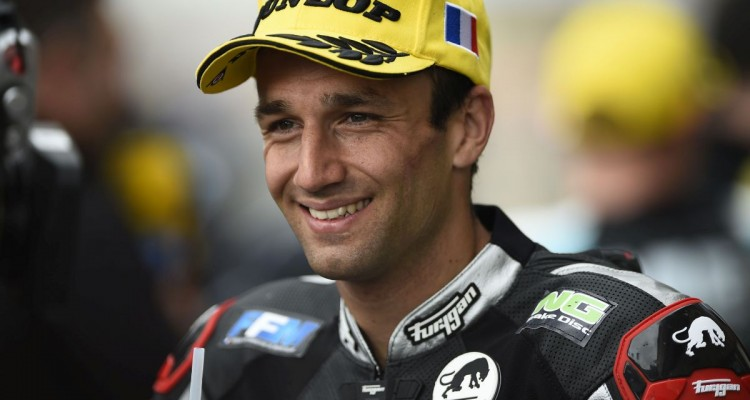 | Francia | Kalex (276 Ptos) | |
| Moto3 | Brad Binder |  |
Africa | Ktm (319 Ptos) | |
| 2015 | Motogp | Jorge Lorenzo |  |
España | Yamaha (330 Ptos) |
| Moto2 | Johann Zarco | Francia | Kalex (352 Ptos) | ||
| Moto3 | Danny Kent | 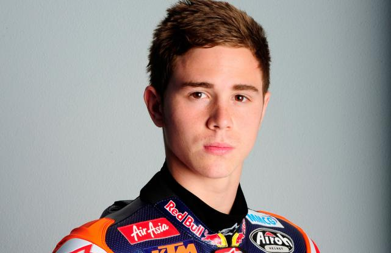 | Gran Bretaña | Honda (260 Ptos) | |
| 2014 | Motogp | Marc Marquez | |
España | Honda (362 Ptos) |
| Moto2 | Esteve Rabat |  |
España | Kalex (346 Ptos) | |
| Moto 3 | Alex Marquez |  |
España | Honda (278 Ptos) | |
| 2013 | Motogp | Marc Marquez | |
España | Honda (334 Ptos) |
| Moto2 | Pol Espargaro |  |
España | Kalex (265 Ptos) | |
| Moto3 | Maverick Viñales |  |
España | Ktm (323 Ptos) | |
| 2012 | Motogp | Jorge Lorenzo | |
España | Yamaha (350 Ptos) |
| Moto2 | Mar Marquez | |
España | Suter (324 Ptos) | |
| 125cc | Sandro Cortese | Alemania | Ktm (325 Ptos) | ||
| 2011 | Motogp | Casey Stoner | 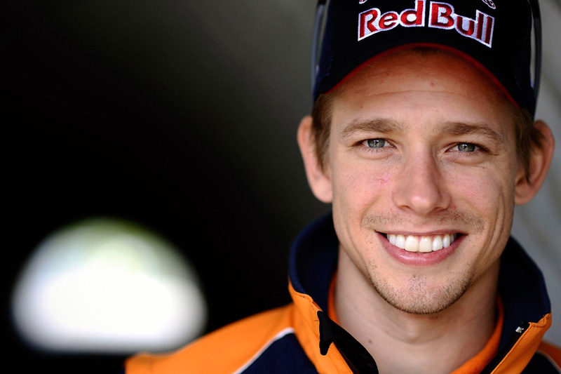 | Australia | Honda (350 Ptos) |
| Moto2 | Stefan Bradl |  |
Alemania | Kalex (274 Ptos) | |
| 125cc | Nicolas Terol |  |
España | Aprilia (302 Ptos) | |
| 2010 | Motogp | Jorge Lorenzo | |
España | Yamaha (383 Ptos) |
| Moto2 | Toni Elias | 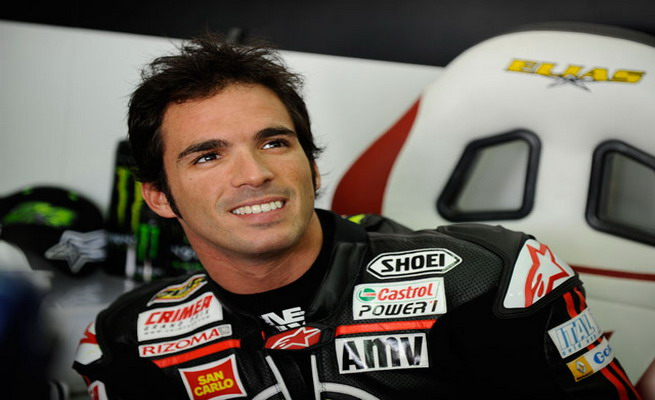 | España | Moriwaki (271 Ptos) | |
| 125cc | Marc Marquez | |
España | Derbi (310 Ptos) | |
| 2009 | Motogp | Valentino Rossi |  |
Italia | Yamaha (306 Ptos) |
| 250cc | Hiroshi Aoyama |  |
Japón | Honda (261 Ptos) | |
| 125cc | Julian Simon |  |
España | Aprilia (289 Ptos) | |
| 2008 | Motogp | Valentino Rossi | |
Italia | Yamaha (373 Ptos) |
| 250cc | Marco Simoncelli |  |
Italia | Gilera (281 Ptos) | |
| 125cc | Mike Di Meglio |  |
Francia | Derbi (264 Ptos) | |
| 2007 | Motogp | Casey Stoner | Australia | Ducati (367 Ptos) | |
| 250cc | Jorge Lorenzo | |
España | Aprilia (312 Ptos) | |
| 125cc | Gabor Talmacsi |  |
Hungría | Aprilia (282 Ptos) | |
| 2006 | Motogp | Nicky Hayden |  |
Estados Unidos | Honda (252 Ptos) |
| 250cc | Jorge Lorenzo | |
España | Aprilia (289 Ptos) | |
| 125cc | Alvaro Bautista |  |
España | Aprilia (338 Ptos) | |
| 2005 | Motogp | Valentino Rossi | |
Italia | Yamaha (367 Ptos) |
| 250cc | Dani Pedrosa |  |
España | Honda (309 Ptos) | |
| 125cc | Thomas Luthi |  |
Suiza | Honda (242 Ptos) | |
| 2004 | Motogp | Valentino Rossi | |
Italia | Yamaha (304 Ptos) |
| 250cc | Dani Pedrosa | |
España | Honda (317 Ptos) | |
| 125cc | Andrea Dovizioso |  |
Italia | Honda (293 Ptos) | |
| 2003 | Motogp | Valentino Rossi | |
Italia | Honda (357 Ptos) |
| 250cc | Manuel Poggiali |  |
San Marino | Aprilia (249 Ptos) | |
| 125cc | Dani Pedrosa | |
España | Honda (223 Ptos) | |
| 2002 | Motogp | Valentino Rossi | |
Italia | Honda (355 Ptos) |
| 250cc | Marco Melandri |  |
Italia | Aprilia (298 Ptos) | |
| 125cc | Arnaud Vincent | Francia | Aprilia (273 Ptos) | ||
| 2001 | 500cc | Valentino Rossi | |
Italia | Honda (325 Ptos) |
| 250cc | Daijiro Kato |  |
Japón | Honda (322 Ptos) | |
| 125cc | Arnaud Vincent | Francia | Aprilia (273 Ptos) | ||
| 2000 | 500cc | Kenny Robert Jr. |  |
Estados Unidos | Suzuki (258 Ptos) |
| 250cc | Olivier Jacque | Francia | Yamaha (279 Ptos) | ||
| 125cc | Roberto Locatelli |  |
Italia | Aprilia (230 Ptos) | |
| 1999 | 500cc | Alex Criville |  |
España | Honda (267 Ptos) |
| 250cc | Valentino Rossi | |
Italia | Aprilia (309 Ptos) | |
| 125cc | Emilio Alzamora | 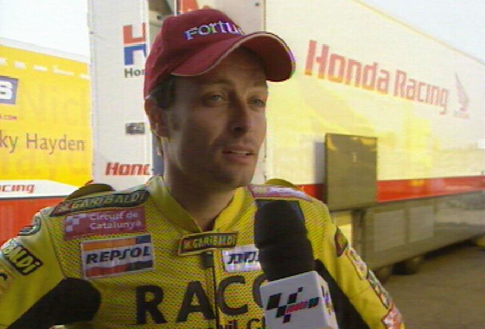 | España | Honda (227 Ptos) | |
| 1998 | 500cc | Mick Doohan |  |
Australia | Honda (260 Ptos) |
| 250cc | Loris Capirossi |  |
Italia | Aprilia (224 Ptos) | |
| 125cc | Kazuto Sakata |  |
Japón | Honda (229 Ptos) | |
| 1997 | 500cc | Mick Doohan | |
Australia | Honda (340 Ptos) |
| 250cc | Max Biaggi |  |
Italia | Honda (250 Ptos) | |
| 125cc | Valentino Rossi | |
Italia | Aprilia (321 Ptos) | |
| 1996 | 500cc | Mick Doohan | |
Australia | Honda (309 Ptos) |
| 250cc | Max Biaggi | |
Italia | Aprilia (274 Ptos) | |
| 125cc | Haruchika Aoki |  |
Japón | Honda (220 Ptos) | |
| 1995 | 500cc | Mick Doohan | |
Australia | Honda (248 Ptos) |
| 250cc | Max Biaggi | |
Italia | Aprilia (283 Ptos) | |
| 125cc | Haruchika Aoki | |
Japón | Honda (224 Ptos) | |
| 1994 | 500cc | Mick Doohan | |
Australia | Honda (317 Ptos) |
| 250cc | Max Biaggi | |
Italia | Aprilia (234 Ptos) | |
| 125cc | Kazuto Sakata | |
Japón | Aprilia (224 Ptos) | |
| 1993 | 500cc | Kevin Schwantz | 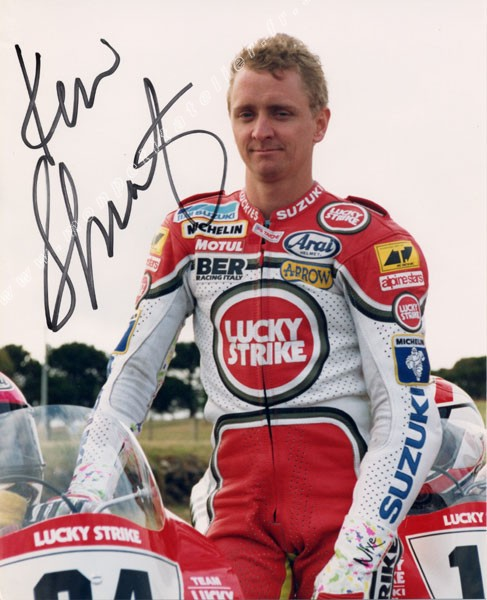 | Estados Unidos | Suzuki (248 Ptos) |
| 250cc | Tetsuya Harada |  |
Japón | Yamaha (197 Ptos) | |
| 125cc | Dirk Raudies | 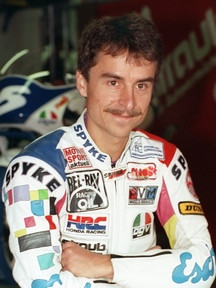 | Alemania | Honda (280 Ptos) | |
| 1992 | 500cc | Wayne Rainey |  |
Estados Unidos | Yamaha (140 Ptos) |
| 250cc | Luca Cadalora |  |
Italia | Honda (203 Ptos) | |
| 125cc | Alessandro Gramigni | Italia | Aprilia (134 Ptos) | ||
| 1991 | 500cc | Wayne Rainey | |
Estados Unidos | Yamaha (233 Ptos) |
| 250cc | Luca Cadalora | |
Italia | Honda (237 Ptos) | |
| 125cc | Loris Capirossi | |
Italia | Honda (200 Ptos) | |
| 1990 | 500cc | Wayney Rainey | |
Estados Unidos | Yamaha (255 Ptos) |
| 250cc | John Kocinski | Estados Unidos | Yamaha (223 ptos) | ||
| 125cc | Loris Capirossi | |
Italia | Honda (182 Ptos) | |
| 1989 | 500cc | Eddie Lawson |  |
Estados Unidos | Honda (228 Ptos) |
| 250cc | Sito Pons |  |
España | Honda (262 Ptos) | |
| 125cc | Alex Criville |  |
España | Honda (262 Ptos) | |
| 80cc | Manuel Herros (Champi) | 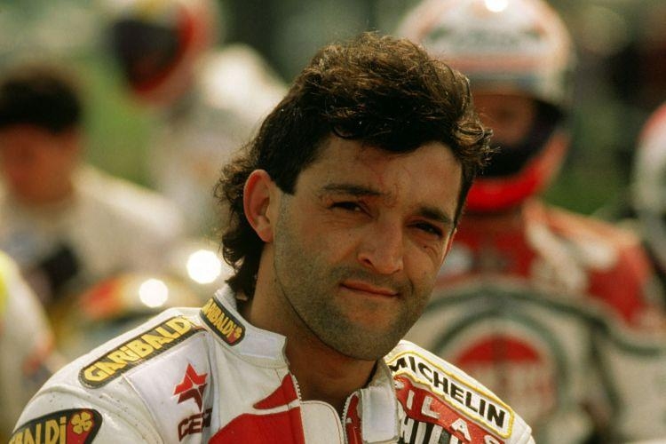 | España | Derbi (92 Ptos) | |
| 1988 | 500cc | Eddie Lawson | |
Estados Unidos | Yamaha (300 Ptos) |
| 250cc | Sito Pons | |
España | Honda (231 Ptos) | |
| 125cc | Jorge Martinez Aspar |  |
España | Derbi (197 Ptos) | |
| 80cc | Jorge Martinez Aspar | |
España | Derbi (137 Ptos) | |
| 1987 | 500cc | Wayne Gardner |  |
Australia | Honda (178 Ptos) |
| 250cc | Anton Mang |  |
Alemania | Honda (136 Ptos) | |
| 125cc | Fausto Gresini | 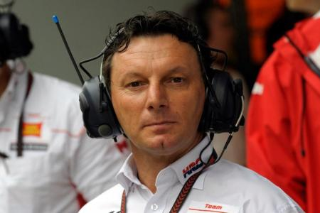 | Italaia | Garelli (150 Ptos) | |
| 80cc | Jorge Martinez Aspar | |
España | Derbi (129 Ptos) | |
| 1986 | 500cc | Eddie Lawson | |
Estados Unidos | Yamaha (139 Ptos) |
| 250cc | Carlos Lavado |  |
Venezuela | Yamaha (114 Ptos) | |
| 125cc | Luca Cadalora | |
Italia | Garelli (122 Ptos) | |
| 80cc | Jorge Martinez Aspar | |
España | Derbi (94 Ptos) | |
| 1985 | 500cc | Freddie Spencer |  |
Estados Unidos | Honda (141 Ptos) |
| 250cc | Freddie Spencer | |
Estados Unidos | Honda (127 Ptos) | |
| 125cc | Fausto Gresini | Italia | Garelli (109 Ptos) | ||
| 80cc | Stefan Dörflinger |  |
Suiza | Krause (86 Ptos) | |
| 1984 | 500cc | Eddie Lawson | |
Estados Unidos | Yamaha (142 Ptos) |
| 250cc | Christian Sarron |  |
Francia | Yamaha (109 Ptos) | |
| 125cc | Angel Nieto |  |
España | Garelli (90 Ptos) | |
| 80cc | Stefan Dörflinger | |
Suiza | Zundapp (82 Ptos) | |
| 1983 | 500cc | Freddie Spencer | |
Estados Unidos | Honda (144 Ptos) |
| 250cc | Carlos Lavado | |
Venezuela | Yamaha (100 Ptos) | |
| 125cc | Angel Nieto | |
España | Garelli (102 Ptos) | |
| 50cc | Stefan Dörflinger | |
Suiza | Krauser (81 Ptos) | |
| 1982 | 500cc | Franco Uncini |  |
Italia | Suzuki (103 Ptos) |
| 350cc | Antong Man | |
Alemania | Kawasaki (81 Ptos) | |
| 250cc | Jean Louis |  |
Francia | Yamaha (118 Ptos) | |
| 125cc | Angel Nieto | |
España | Garelli (111 Ptos) | |
| 50cc | Stefan Dörflinger | |
Suiza | Kreidler (81 Ptos) | |
| 1981 | 500cc | Marco Lucchinelli |  |
Italia | Suzuki (105 Ptos) |
| 350cc | Antong Mang | |
Alemania | Kawasaki (193 Ptos) | |
| 250cc | Antong Mang | |
Alemania | Kawasaki (160 Ptos) | |
| 125 cc | Angel Nieto | |
España | Minarelli (140 Ptos) | |
| 50cc | Ricardo Tormo | 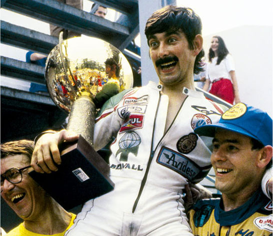 | España | Bultaco (90 Ptos) | |
| 1980 | 500cc | Kenny Roberts | Estados Unidos | Yamaha (87 Ptos) | |
| 350cc | Jonnie Ekerold | 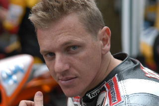 | San Marino | Bimota (63 Ptos) | |
| 250cc | Anton Magn | |
Alemania | Kawasaki (128 Ptos) | |
| 125cc | Pierpaolo Biancho |  |
Italia | Mba (90 Ptos) | |
| 50cc | Eugenio Lazzarini |  |
Italia | Eugenio Lazzarini (74 Puntos) | |
| 1979 | 500cc | Kenny Roberts | Estados Unidos | Yamaha (113 Ptos) | |
| 350cc | Kork Ballngton |  |
San Marino | Kawasaki (99 Ptos) | |
| 250cc | Kork Ballington | |
San Marino | Kawasaki (141 Ptos) | |
| 125cc | Angel Nieto | |
Español | Minarelli (120 Ptos) | |
| 50cc | Eugenio Lazzarini | |
Italia | Kreidler (75 Ptos) | |
| 1978 | 500cc | Kenny Roberts | Estados Unidos | Yamaha (110 Ptos) | |
| 350cc | Kork Ballington | |
Africa | Kawasaki (134 Ptos) | |
| 250cc | Kork Ballington | |
Africa | Kawasaki (124 Ptos) | |
| 125cc | Pierpaolo Bianchi | |
Italia | Morbidelli (131 Ptos) | |
| 50cc | Ricardo Tormo | España | Bultaco (99 Ptos) | ||
| 1977 | 500cc | Barry Sheene | Gran Bretaña | Suzuki (107 Ptos) | |
| 350cc | Takazumi Katayama |  |
Japón | Yamaha (95 Ptos) | |
| 250cc | Mario Lega |  |
Italia | Morbidelli (85 Ptos) | |
| 125cc | Pierpaolo Bianchi | |
Italia | Morbidelli (90 Ptos) | |
| 50cc | Angel Nieto | |
España | Bultaco (87 Ptos) | |
| 1976 | 500cc | Barry Sheene | Gran Bretaña | Suzuki (72 Ptos) | |
| 350cc | Walter Villa | 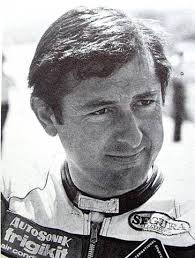 | Italia | Harley Davidson (76 Ptos) | |
| 250cc | Walter Villa | Italia | Harley Davidson (90 Ptos) | ||
| 125cc | Paolo Pileri |  |
Italia | Morbidelli (60 Ptos) | |
| 50cc | Angel Nieto | |
España | Bultaco (85 Ptos) | |
| 1975 | 500cc | Giacomo Agostimi |  |
Italia | Yamaha (84 Ptos) |
| 350cc | Johnny Cecotto |  |
Venezuela | Yamaha (78 Ptos) | |
| 250cc | Walter Villa | Italia | Harley Davidson (85 Ptos) | ||
| 125cc | Kent Andersson |  |
Suecia | Yamaha (87 ptos) | |
| 50cc | Angel Nieto | |
España | Kreidler (75 Ptos) | |
| 1974 | 500cc | Phil Read |  |
Gran Bretaña | Mv Agusta (82 Ptos) |
| 350cc | Giacomo Agostini | |
Italia | Yamaha (75 Ptos) | |
| 250cc | Walter Villa | Italia | Harley Davidson (77 Ptos) | ||
| 125cc | Kent Andersson | |
Suecia | Yamaha (99 Ptos) | |
| 50cc | Henk Van Kessel |  |
Holanda | Van Venn-Kreidler (90 Ptos) | |
| 1973 | 500cc | Phil Read | |
Gran Bretaña | Mv Agusta (84 Ptos) |
| 350cc | Giacomo Agostini | |
Italia | Mv Agusta (84 Ptos) | |
| 250cc | Dieter Braun |  |
Alemania | Yamaha (80 Ptos) | |
| 125cc | Angel Nieto | |
España | Derbi (97 Ptos) | |
| 50cc | Jan de Vries | 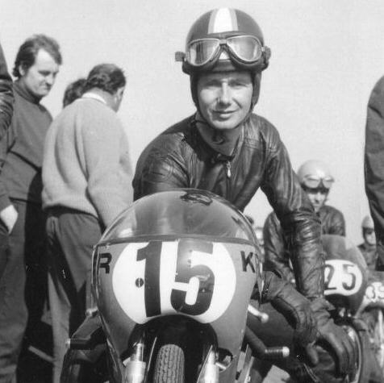 | Holanda | Kreidler (60 Ptos) | |
| 1972 | 500cc | Giacomo Agostini | |
Italia | Mv Agusta (105 Ptos) |
| 350cc | Giacomo Agostini | |
Italia | Mv Agusta (102 Ptos) | |
| 250cc | Jarno Saarinen |  |
Finlandia | Yamaha (94 Ptos) | |
| 125cc | Angel Nieto | |
España | Derbi (87 Ptos) | |
| 50cc | Angel Nieto | |
España | Derbi (69 Ptos) | |
| 1971 | 500cc | Giacomo Agostini | |
Italia | Mv Agusta (90 Ptos) |
| 350cc | Giacomo Agostini | |
Italia | Mv Agusta (90 Ptos) | |
| 250cc | Phil Read | |
Gran Bretaña | Yamaha (73 Ptos) | |
| 125cc | Angel Nieto | |
España | Derbi (87 Ptos) | |
| 50cc | Jan de Vries | Holanda | Kreidler (75 Ptos) | ||
| 1970 | 500cc | Giacomo Agostini | |
Italia | Mv Agusta (90 Ptos) |
| 350cc | Giacomo Agostini | |
Italia | Mv Agusta (90 Ptos) | |
| 250cc | Rodney Gould | Gran Bretaña | Yamaha (102 Ptos) | ||
| 125cc | Dieter Braun | |
Alemania | Suzuki (84 Ptos) | |
| 50cc | Angel Nieto | |
España | Derbi (87 Ptos) | |
| 1969 | 500cc | Giacomo Agostini | |
Italia | Mv Agusta (100 Ptos) |
| 350cc | Giacomo Agostimi | |
Italia | Mv Agusta (120 Ptos) | |
| 250cc | Kel Carruthers |  |
Australia | Benelli (89 Ptos) | |
| 125cc | Dave Simmonds |  |
Gran Bretaña | Kawasaki (70 Ptos) | |
| 50cc | Angel Nieto | |
España | Derbi (76 Ptos) | |
| 1968 | 500cc | Giacomo Agostini | |
Italia | Mv Agusta (48 Ptos) |
| 350cc | Giacomo Agostini | |
Italia | Mv Agusta (32 Ptos) | |
| 250cc | Phil Read | |
Gran Bretaña | Yamaha (46 Ptos) | |
| 125cc | Phil Read | |
Gran Bretaña | Yamaha (40 Ptos) | |
| 50cc | Hans-Georg Anscheidt |  |
Alemania | Suzuki (24 Ptos) | |
| 1967 | 500cc | Giacomo Agostini | |
Italia | Mv Agusta (46 Ptos) |
| 350cc | Mike Hailwood |  |
Gran Bretaña | Honda (40 Ptos) | |
| 250cc | Mike Hailwood | |
Gran Bretaña | Honda (50 Ptos) | |
| 125cc | Bill Ivy | 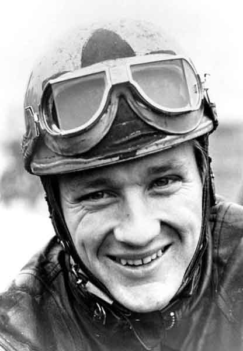 | Gran Bretaña | Yamaha (56 Ptos) | |
| 50cc | Hans-Georg Anscheidt | |
Alemania | Suzuki (30 Ptos) | |
| 1966 | 500cc | Giacomo Agostini | |
Italia | Mv Agusta (36 Ptos) |
| 350cc | Mike Hailwood | |
Gran Bretaña | Honda (48 Ptos) | |
| 250cc | Mike Hailwood | |
Gran Bretaña | Honda (56 Ptos) | |
| 125cc | Luigi Taveri |  |
Suiza | Honda (46 Ptos) | |
| 50cc | Hans-Georg Anscheidt | |
Alemania | Suzuki (28 Ptos) | |
| 1965 | 500cc | Mike Hailwood | |
Gran Bretaña | Mv Agusta (48 Ptos) |
| 350cc | Jim Redman |  |
Rodesia | Honda (38 Ptos) | |
| 250cc | Phil Read | |
Gran Bretaña | Yamaha (56 Ptos) | |
| 125cc | Hugh Anderson | 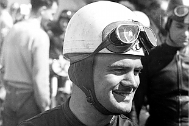 | Nueva Zelanda | Suzuki (56 Ptos) | |
| 50cc | Ralph Bryans |  |
Irlanda | Honda (36 Ptos) | |
| 1964 | 500cc | Mike Hailwood | |
Gran Bretaña | Mv Agusta (40 Ptos) |
| 350cc | Jim Redman | |
Rodesia | Honda (40 Ptos) | |
| 250cc | Phil Read | |
Gran Bretaña | Yamaha (46 Ptos) | |
| 125cc | Luigi Taveri | |
Suiza | Honda (46 Ptos) | |
| 50cc | Hugh Anderson | Nueva Zelanda | Suzuki (38 Ptos) | ||
| 1963 | 500cc | Mike Hailwood | |
Gran Bretaña | Mb Agusta (40 Ptos) |
| 350cc | Jim Redman | |
Rodesia | Honda (32 Ptos) | |
| 250cc | Jim Redman | |
Rodesia | Honda (44 Ptos) | |
| 125cc | Hugh Anderson | Nueva Zelanda | Suzuki (54 Ptos) | ||
| 50cc | Hugh Anderson | Nueva Zelanda | Suzuki (34 Ptos) | ||
| 1962 | 500cc | Mike Hailwood | |
Gran Bretaña | Mv Agusta (40 Ptos) |
| 350cc | Jim Redman | |
Rodesia | Honda (32 Ptos) | |
| 250cc | Jim Redman | |
Rodesia | Honda (48 Ptos) | |
| 125cc | Luigi Taveri | |
Suiza | Honda (48 Ptos) | |
| 50cc | Ernst Degner |  |
Alemania | Suzuki (47 Ptos) | |
| 1961 | 500cc | Gary Hocking | Rodesia | Mv Agusta (48 Ptos) | |
| 350cc | Gary Hocking | Rodesia | Mv Agusta (38 Ptos) | ||
| 250cc | Mike Hailwood | |
Gran Bretaña | Honda (44 Ptos) | |
| 125cc | Tom Phillis | Austalia | Honda (44 Ptos) | ||
| 1960 | 500cc | John Surtees |  |
Gran Bretaña | Mv Agusta (32 Ptos) |
| 350cc | John Surtees | |
Gran Bretaña | Mv Agusta (22 Ptos) | |
| 250cc | Carlo Ubbiali |  |
Italia | Mv Agusta (32 Ptos) | |
| 125cc | Carlo Ubbiali | |
Italia | Mv Agusta (24 Ptos) | |
| 1959 | 500cc | John Surtees | |
Gran Bretaña | Mv Agusta (32 Ptos) |
| 350cc | John Surtees | |
Gran Bretaña | Mv Agusta (32 Ptos) | |
| 250cc | Carlo Ubbiali | |
Italia | Mv Agusta (28 Ptos) | |
| 125cc | Carlo Ubbiali | |
Italia | Mv Agusta (30 Ptos) | |
| 1958 | 500cc | John Surtees | |
Gran Bretaña | Mv Agusta (32 Ptos) |
| 350cc | John Surtees | |
Gran Bretaña | Mv Agusta (32 Ptos) | |
| 250cc | Tarquinio Provini | Italia | Mv Agusta (32 Ptos) | ||
| 125cc | Carlo Ubbiali | |
Italia | Mv Agusta (32 Ptos) | |
| 1957 | 500cc | Libero Liberati |  |
Italia | Gilera (32 Ptos) |
| 350cc | Keith Campbell |  |
Australia | Moto Guzzi (30 Ptos) | |
| 250cc | Cecyl Sandford |  |
Gran Bretaña | Mondial (26 Ptos) | |
| 125cc | Tarquinio Provini | Italia | Mondial (30 Ptos) | ||
| 1956 | 500cc | John Surtees | |
Gran Bretaña | Mv Agusta (24 Ptos) |
| 350cc | Bill Lomas |  |
Gran Bretaña | Moto Guzzi (24 Ptos) | |
| 250cc | Carlo Ubbiali | |
Italia | Mv agusta (32 Ptos) | |
| 125cc | Carlo Ubbiali | |
Italia | Mv Agusta (32 Ptos) | |
| 1955 | 500cc | Geoff Duke | 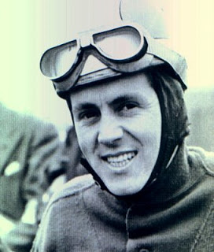 | Gran Bretaña | Gilera (36 Ptos) |
| 350cc | Bill Lomas | |
Gran Bretaña | Moto Guzzi (32 Ptos) | |
| 250cc | Hermann Paul Müller |  |
Alemania | Nsu (16 Ptos) | |
| 125cc | Carlo Ubbiali | |
Italia | Mv Agusta (32 Ptos) | |
| 1954 | 500cc | Geoff Duke | Gran Bretaña | Gilera (40 Ptos) | |
| 350cc | Fergus Anderson |  |
Gran Bretaña | Moto Guzzi (38 Ptos) | |
| 250cc | Werner Haas | Alemania | Nsu (32 Ptos) | ||
| 125cc | Rupert Hollaus |  |
Austriaco | Nsu (32 Ptos) | |
| 1953 | 500cc | Geoff Duke | Gran Bretaña | Gilera (38 Ptos) | |
| 350cc | Fergus Anderson | |
Gran Bretaña | Moto Guzzi (34 Ptos) | |
| 250cc | Wernes Haas | Alemania | Nsu (28 Ptos) | ||
| 125cc | Werner Haas | Alemanai | Nsu (30 Ptos) | ||
| 1952 | 500cc | Umberto Masetti |  |
Italia | Gilera (28 Ptos) |
| 350cc | Geoff Duke | Gran Bretaña | Norton (32 Ptos) | ||
| 250cc | Enrico Lorenzetti | Italia | Moto Guzzi (28 Ptos) | ||
| 125cc | Cecyl Sandford | |
Gran Bretaña | Mv Agusta (28 Ptos) | |
| 1951 | 500cc | Geoff Duke | Gran Bretaña | Norton (35 Ptos) | |
| 350cc | Geoff Duke | Gran Bretaña | Ajs (32 Ptos) | ||
| 250cc | Bruno Ruffo |  |
Italia | Moto Guzzi (26 Ptos) | |
| 125cc | Carlo Ubbiali | |
Italia | Mondial (20 Ptos) | |
| 1950 | 500cc | Umberto Masetti | |
Italia | Gilera (28 Ptos) |
| 350cc | Bob Foster |  |
Gran Bretaña | Velocette (30 Ptos) | |
| 250cc | Dario Ambrosini | Italia | Benelli (24 Ptos) | ||
| 125cc | Bruno Ruffo | |
Italia | Mondial (17 Ptos) | |
| 1949 | 500cc | Leslie Graham |  |
Gran Bretaña | Ajs (30 Ptos) |
| 350cc | Freddie Frith |  |
Gran Bretaña | Velocette (33 Ptos) | |
| 250cc | Bruno Ruffo | |
Italia | Moto Guzzi (24 Ptos) | |
| 125cc | Nello Pagani | Italia | Mondial (27 Ptos) | ||